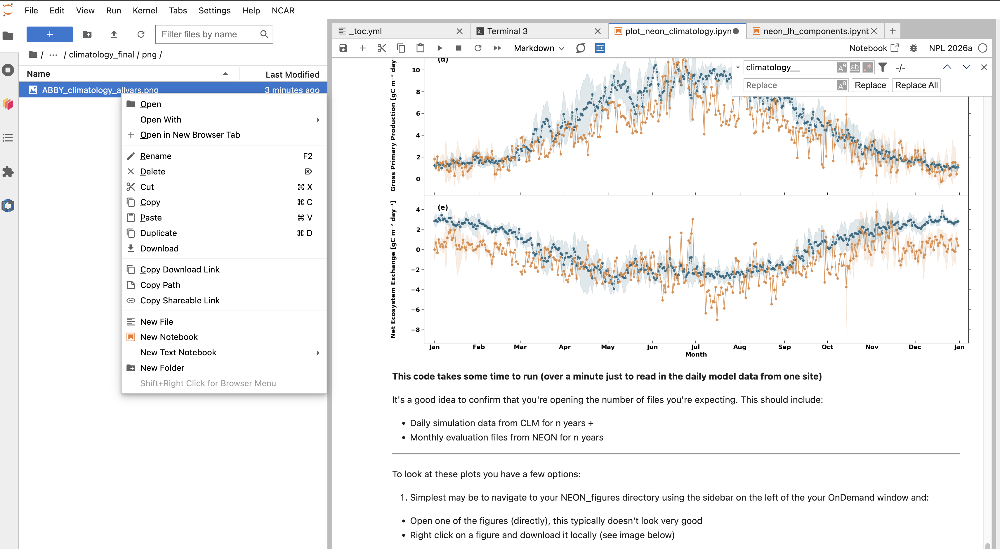

Climatology plots for NEON sites#
BEFORE BEGINNING THIS EXERCISE - Check that your kernel (upper right corner, above) is NPL2026a. This should be the default kernel, but if it is not, click on that button and select NPL2026a.
This activity provides examples for making an annual climatology of observed and simulated fluxes at NEON sites. Work here follows results published in Fig 3 of Lomborzozzi et al. 2023.
Author: Negin Sobhani @negin513
Modified by: Will Wieder (wwieder@ucar.edu ; @wwieder) and Teagan King @TeaganKing)
Last revised: 2026-11-10

Mean daily flux climatology at the NEON Treehaven site (TREE) in Wisconsin.
This notebook includes scripts for:
Reading evaluation (NEON) and model (CTSM) data for all neon sites
Making climatology figures, including time-series with standard deviation as shaded regions
NOTE: Results from a series of older CLM simulations and NEON observations are provided /glade/campaign/cgd/tss/tutorials/neon_v3/ for students to use.
This is a more advanced plotting script.
Imports:#
import os
import time
import datetime
import numpy as np
import pandas as pd
import xarray as xr
from glob import glob
from os.path import join
import matplotlib
import matplotlib.pyplot as plt
import matplotlib.dates as mdates
import calendar
import tqdm
import cftime
from neon_utils import download_eval_files
from neon_utils import fix_time_h1
import warnings
warnings.filterwarnings("ignore")
print('xarray '+xr.__version__) # was working with 2025.12.0
User defined options#
Modify the directory structures below for your own cases.
neon_sites = ['ABBY'] # list of the sites you want to plot
case = '.transient' # this should be the rest of your case name for each neon_site
# (e.g. "site.transient" or "site.experiment.transient")
save_switch = True # set to false to save time and memory.
years = ["2018","2019","2020","2021"]
# Make the figures directory if it's not already there
plot_dir = '~/NEON_figures/'
plot_dir = os.path.realpath(os.path.expanduser(plot_dir))
if not os.path.isdir(plot_dir):
print ("figures directory does not exist... creating it now!")
os.makedirs(plot_dir, exist_ok=True)
else:
print("figures directory already exists")
# Make the eval_files directory if it's not already there
eval_dir = '/glade/campaign/cgd/tss/tutorials/neon_v3/eval_files'
eval_dir = os.path.realpath(os.path.expanduser(eval_dir))
if not os.path.isdir(eval_dir):
print ("eval directory does not exist... creating it now!")
os.makedirs(eval_dir, exist_ok=True)
else:
print("eval directory already exists")
Download NEON Evaluation data#
# We already are providing data on disk, but this also sets up the site_dir
for neon_site in neon_sites:
site_dir = eval_dir+'/'+neon_site
site_dir = os.path.realpath(os.path.expanduser(site_dir))
if not os.path.isdir(site_dir):
download_eval_files(neon_site,eval_dir)
else:
print(site_dir +" exists")
Define Useful Functions and Objects#
def shaded_climo( df_daily, df_daily_std, var, ax, color1= '#e28743',color2='#1d657e'):
plot_var = var.obs_var
sim_var = var.sim_var
plot_var_desc = var.long_name
plot_var_unit = var.unit
ax.plot ( df_daily.time, df_daily[sim_var], marker = 'o' , linestyle ='dashed', color = color2, label="CTSM", alpha = 0.9)
ax.plot ( df_daily.time, df_daily[plot_var], marker = 'o' , color = color1,label="NEON", alpha = 0.9)
ax.fill_between(df_daily.time,
df_daily[plot_var]-df_daily_std[plot_var],
df_daily[plot_var]+df_daily_std[plot_var] ,alpha=0.15, color = color1)
ax.fill_between(df_daily.time,
df_daily[sim_var]-df_daily_std[sim_var],
df_daily[sim_var]+df_daily_std[sim_var] ,alpha=0.15, color = color2)
ax.set_xlabel('Time', fontsize=17)
ax.set_ylabel(plot_var_desc+" ["+plot_var_unit+"]", fontsize=17)
ax.margins(x=0.02)
def climatology_allvars_fig3 (fig, df_daily, df_daily_std, all_vars, plot_dir, color1= '#e28743',color2='#1d657e' , save_switch=False):
panel_labels = ["(a)", "(b)", "(c)", "(d)", "(e)"]
axes = fig.subplots(nrows=5, ncols=1)
axe = axes.ravel()
for index, var in enumerate(all_vars):
ax = axe[index]
shaded_climo( df_daily, df_daily_std, var, ax,color1,color2)
ax.text(.025,0.90,panel_labels[index],
horizontalalignment='left',
transform=ax.transAxes, fontweight='bold',fontsize=19)
# Set the locator for boxplots
locator = mdates.MonthLocator() # every month
# Specify the format - %b gives us Jan, Feb...
fmt = mdates.DateFormatter('%b')
if index == 0:
ax.text(.5,1.03,'NEON site : '+neon_site + ' [2018-2021]',
horizontalalignment='center',
transform=ax.transAxes, fontweight='bold',fontsize=19)
ax.legend(fontsize = 17)
ax.tick_params(axis='both', which='both', labelsize=17,width=1,length=7)
ax.tick_params(axis='x',direction="in", length = 7)
ax.yaxis.set_ticks_position('both')
ax.tick_params(axis='y',direction="out", length = 7)
X=ax.xaxis
X.set_major_locator(locator)
X.set_major_formatter(fmt)
ax.get_yaxis().set_label_coords(-0.05,0.5)
if index == 5:
X = plt.gca().xaxis
X.set_major_locator(locator)
X.set_major_formatter(fmt)
ax.set_xlabel('Month', fontsize=17)
fig.subplots_adjust(wspace=0, hspace=0)
if save_switch:
plot_name = neon_site+'_'+'climatology_allvars.png'
plot_dir1 = os.path.join(plot_dir, 'climatology_final', 'png')
if not os.path.isdir(plot_dir1):
os.makedirs(plot_dir1, exist_ok=True)
print ('Saving '+ os.path.join(plot_dir1,plot_name))
plt.savefig (os.path.join(plot_dir1,plot_name), dpi=600,bbox_inches='tight')
plot_name = neon_site+'_'+'climatology_allvars.pdf'
plot_dir2 = os.path.join(plot_dir, 'climatology_final', 'pdf')
if not os.path.isdir(plot_dir2):
os.makedirs(plot_dir2, exist_ok=True)
print ('Saving '+ os.path.join(plot_dir2,plot_name))
plt.savefig (os.path.join(plot_dir2,plot_name), dpi=600,bbox_inches='tight', format = 'pdf')
else:
plt.show()
class PlotVariable ():
def __init__(self, short_name, long_name, unit):
self.short_name = short_name
self.long_name = long_name
self.unit = unit
self.obs_var = short_name
self.sim_var = 'sim_'+short_name
Define variables to create plots#
Create a list of variables for the plots.
all_vars= []
failed_sites = []
plot_var = 'Rnet'
sim_var = 'sim_'+plot_var
plot_var_desc = "Net Radiation"
plot_var_unit= "W m⁻²"
this_var = PlotVariable(plot_var, plot_var_desc, plot_var_unit)
all_vars.append(this_var)
plot_var = 'FSH'
sim_var = 'sim_'+plot_var
plot_var_desc = 'Sensible Heat Flux'
plot_var_unit= "W m⁻²"
this_var = PlotVariable(plot_var, plot_var_desc, plot_var_unit)
all_vars.append(this_var)
plot_var = 'EFLX_LH_TOT'
sim_var = 'sim_'+plot_var
plot_var_desc = "Latent Heat Flux"
plot_var_unit= "W m⁻²"
this_var = PlotVariable(plot_var, plot_var_desc, plot_var_unit)
all_vars.append(this_var)
plot_var = 'GPP'
sim_var = 'sim_'+plot_var
plot_var_desc = "Gross Primary Production"
plot_var_unit= "gC m⁻² day⁻¹"
this_var = PlotVariable(plot_var, plot_var_desc, plot_var_unit)
all_vars.append(this_var)
plot_var = 'NEE'
sim_var = 'sim_'+plot_var
plot_var_desc = "Net Ecosystem Exchange"
plot_var_unit= "gC m⁻² day⁻¹"
this_var = PlotVariable(plot_var, plot_var_desc, plot_var_unit)
all_vars.append(this_var)
Make Climatology Figure#
# Read only these variables from the whole netcdf files
def preprocess (ds):
variables = ['FCEV', 'FCTR', 'FGEV','FSH','GPP','FSA','FIRA','AR','HR','ELAI']
ds_new= ds[variables]
return ds_new
# Set some defaults for our figures
plt.rcParams["font.weight"] = "bold"
plt.rcParams["axes.labelweight"] = "bold"
font = {'weight' : 'bold',
'size' : 15}
matplotlib.rc('font', **font)
Loop through the list of sites and make plots for all of them.
If you want to save your plots change save_switch = True.
for neon_site in neon_sites:
try:
start_site = time.time()
print ('---------------------------')
print ("Making plots for "+neon_site)
sim_files =[]
for year in years:
sim_path = "/glade/campaign/cgd/tss/tutorials/neon_v3/hist_files/"+neon_site+case+"/lnd/hist/"
sim_path = os.path.realpath(os.path.expanduser(sim_path))
sim_files.extend(sorted(glob(join(sim_path,neon_site+case+".clm2.h1."+year+"*.nc"))))
print(sim_path)
print("All simulation files for all years: [", len(sim_files), "files]")
start = time.time()
ds_ctsm = xr.open_mfdataset(sim_files, decode_times=True, combine='by_coords',
parallel=True,preprocess=preprocess)
ds_ctsm = fix_time_h1(ds_ctsm)
end = time.time()
print("Reading all simulation files took:", end-start, "s.")
eval_files = []
for year in years:
eval_files.extend(sorted(glob(join(site_dir,neon_site+"_eval_"+year+"*.nc"))))
print(site_dir)
print ("All evaluation files for all years: [", len(eval_files), "files]")
start = time.time()
ds_eval = xr.open_mfdataset(eval_files, decode_times=True, combine='by_coords')
end = time.time()
print("Reading all observation files took:", end-start, "s.")
print ("Processing data...")
# Convert CTSM data to a Pandas Dataframe for easier handling:
ctsm_vars = ['FCEV', 'FCTR', 'FGEV','FSH','GPP','FSA','FIRA','AR','HR','ELAI']
df_ctsm = pd.DataFrame({'time':ds_ctsm.time})
df_ctsm['time'] = pd.to_datetime(df_ctsm['time'],format= '%Y-%m-%d %H:%M:%S' )
for var in tqdm.tqdm(ctsm_vars):
sim_var_name = "sim_"+var
field = np.ravel ( ds_ctsm[var])
df_ctsm[sim_var_name]=field
# Shift simulation data by one
df_ctsm[sim_var_name]=df_ctsm[sim_var_name].shift(-1).values
# Convert NEON data to a Pandas Dataframe for easier handling:
eval_vars = ['NEE','FSH','EFLX_LH_TOT','GPP','Rnet']
df_all = pd.DataFrame({'time':ds_eval.time})
for var in eval_vars:
field = np.ravel (ds_eval[var])
df_all[var]=field
# Merge two pandas dataframe on time
df_all=df_all.merge(df_ctsm.set_index('time'), on='time', how='left')
clm_var = 'sim_EFLX_LH_TOT'
# Latent Heat Flux:
# EFLX_LH_TOT = FCEV + FCTR +FGEV
df_all [clm_var] = df_all['sim_FCEV']+ df_all['sim_FCTR']+ df_all['sim_FGEV']
clm_var = 'sim_Rnet'
# Net Radiation:
# Rnet = FSA-FIRA
df_all [clm_var] = df_all ['sim_FSA']-df_all['sim_FIRA']
clm_var = 'sim_NEE'
# Net Ecosystem Exchange
# NEE = GPP - (AR+HR)
# The signs are opposite so we calculated negative NEE
df_all [clm_var] = -(df_all ['sim_GPP']-(df_all['sim_AR']+df_all['sim_HR']))
# Convert NEE units from umolm-2s-1 to gC/m2/s
df_all ['NEE']= df_all ['NEE']*(12.01/1000000)
df_all ['GPP']= df_all ['GPP']*(12.01/1000000)
# Convert gC/m2/s to gC/m2/day
df_all ['NEE']= df_all['NEE']*60*60*24
df_all ['sim_NEE']= df_all['sim_NEE']*60*60*24
df_all ['GPP']= df_all['GPP']*60*60*24
df_all ['sim_GPP']= df_all['sim_GPP']*60*60*24
# Extract year, month, day, hour information from time
df_all['year'] = df_all['time'].dt.year
df_all['month'] = df_all['time'].dt.month
df_all['day'] = df_all['time'].dt.day
df_all['hour'] = df_all['time'].dt.hour
# Calculate daily average for every day
df_daily_allyears = df_all.groupby(['year','month','day']).mean().reset_index()
df_daily_allyears['time']=pd.to_datetime(df_daily_allyears[["year","month", "day"]])
# Calculate average of daily averages for all years
df_daily = df_daily_allyears.groupby(['month','day']).mean().reset_index()
df_daily['year']='2020'
df_daily['time']=pd.to_datetime(df_daily[["year","month", "day"]])
# Calculate Standard Deviation of daily averages over years
df_daily_std = df_daily_allyears.groupby(['month','day']).std().reset_index()
df_daily_std['time'] = df_daily['time']
df_daily['site']=neon_site
print ("Making climatology plots...")
color1 = '#e28743'
color2 = '#1d657e'
#========================================================================
fig = plt.figure(num=None, figsize=(27, 37), facecolor='w', edgecolor='k')
climatology_allvars_fig3( fig, df_daily, df_daily_std, all_vars, plot_dir, color1,color2, save_switch)
end_site = time.time()
print("Making these plots for "+neon_site+" took : ", end_site-start_site, "s.")
print(" Plots can be found in "+plot_dir)
except Exception as e:
print (e)
print ('THIS SITE FAILED:', neon_site)
failed_sites.append(neon_site)
pass
print ("Making plots for ", len(failed_sites), "sites failed : ")
print (*failed_sites, sep=" \n")
This code takes some time to run (over a minute just to read in the daily model data from one site)
It’s a good idea to confirm that you’re opening the number of files you’re expecting. This should include:
Daily simulation data from CLM for n years +
Monthly evaluation files from NEON for n years
To look at these plots you have a few options:
Simplest may be to navigate to your NEON_figures directory using the sidebar on the left of the your OnDemand window and:
Open one of the figures (directly), this typically doesn’t look very good
Right click on a figure and download it locally (see image below)
Download the whole
pngdirectory to you local machine. You can do this by:Open a new terminal window on your local machine
cd Desktopscp -r $USER@casper.hpc.ucar.edu:/glade/u/home/$USER/NEON_figures/climatology_final/png .NOTE you’ll have to replace $USER with your actual username
Alternatively, if you have X11 forwarding enabled on your local machine you can visualize these figures on the terminal window with:
display /glade/u/home/$USER/NEON_figures/climatology_final/png/ABBY_climatology_allvars.png

After your plot comes up, what do you see?
How does the CLM simulation look compared to the NEON observations?
If net radiation doesn’t look good, it suggests there’s an issue with energy balance and albedo.
If sensible and latent heat fluxes are off, what could this suggest?
Does the timing and magnitude of GPP fluxes seem sensible in the both model AND observations?
What about the timing and magnitude of NEE? Remember, in CLM we’re making steady state assumptions about the long-term net C flux. Does this assumption necessarily hold in real world ecosystems?
Where can I even start looking for clues?
Does the simulated LAI at your site look reasonable?
This can be done with monthly (h0) files, but daily (h1) may be more instructive.
How does the forcing data look?
Specifically, try looking at precipitation (from NEON input data), or the sum of RAIN and SNOW (from model history files).
You’ve done the easy part!
Diagnosing sources of potential biases is both an art and a science.
Please ask for help if you’re going to dive into this, and also let us know what you find!
plot_dir